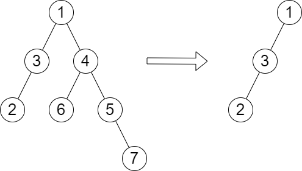

| Category | Difficulty | Likes | Dislikes |
|---|---|---|---|
| Algorithms | Hard | 1533 | 37 |
array | tree | depth-first-search | breadth-first-search | binary-tree
google | facebook
You are given the root of a binary tree with n nodes. Each node is assigned a unique value from 1 to n. You are also given an array queries of size m.
You have to perform m independent queries on the tree where in the ith query you do the following:
queries[i] from the tree. It is guaranteed that queries[i] will not be equal to the value of the root.Return an array answer of size m where answer[i] is the height of the tree after performing the ith query.
Note:
Example 1:

Input: root = [1,3,4,2,null,6,5,null,null,null,null,null,7], queries = [4]
Output: [2]
Explanation: The diagram above shows the tree after removing the subtree rooted at node with value 4.
The height of the tree is 2 (The path 1 -> 3 -> 2).Example 2:

Input: root = [5,8,9,2,1,3,7,4,6], queries = [3,2,4,8]
Output: [3,2,3,2]
Explanation: We have the following queries:
- Removing the subtree rooted at node with value 3. The height of the tree becomes 3 (The path 5 -> 8 -> 2 -> 4).
- Removing the subtree rooted at node with value 2. The height of the tree becomes 2 (The path 5 -> 8 -> 1).
- Removing the subtree rooted at node with value 4. The height of the tree becomes 3 (The path 5 -> 8 -> 2 -> 6).
- Removing the subtree rooted at node with value 8. The height of the tree becomes 2 (The path 5 -> 9 -> 3).
Constraints:
n.2 <= n <= 1051 <= Node.val <= nm == queries.length1 <= m <= min(n, 104)1 <= queries[i] <= nqueries[i] != root.val